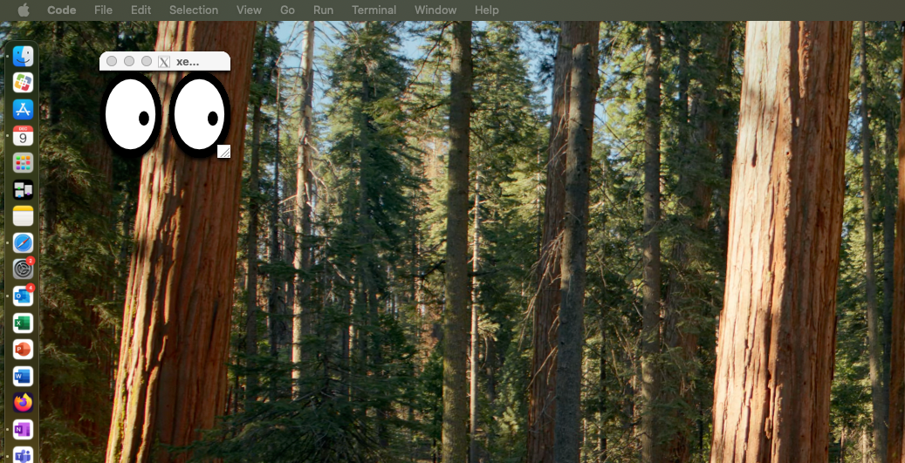

Working with gadi via your Mac#
Mac OS interfaces very well with Unix/Linux systems (like gadi), because Mac OS is itself based on an old version of Unix called ‘BSD’.
However, there are a few tricks you need to know before you can seamlessly work with gadi on your Mac desktop.
Direct connection via ssh#
You can access a gadi login node directly from your Mac OS Terminal with the command
ssh username@gadi.nci.org.au
To avoid typing in your gadi username and password every time you login, you will want to append the local ssh ‘public key’ from your Mac to your remote ‘authorized keys’ file on gadi.
This can be done in three easy steps by following the instructions:
In those instructions, you will need to include your gadi username, because those instructions assume your local and remote usernames are the same (which is highly unlikely in our case.)
So in Step 2, you will need to type
ssh-copy-id -i ~/.ssh/id_rsa.pub username@gadi.nci.org.au
where ‘username’ is your actual gadi username, e.g. ‘ab1234’.
If you want to access graphical applications on gadi remotely (e.g. emacs, rose GUI, Microsoft VS Code etc) you will need to allow ‘X windows forwarding’ between your local terminal session and gadi. You activate this using the -X flag, e.g.
ssh -X username@gadi.nci.org.au
BUT : You will NOT be able to interact with graphical apps on gadi until you complete the steps below.
X-windows support#
The native Mac OS uses ‘Quartz’ to generate Mac Graphical-User-Interface ‘Aqua’. Unix uses the X Windows protocol :
https://en.wikipedia.org/wiki/X_Window_System
Mac OS used to natively support X windows out-of-the-box, but this support was removed in 2012. Nowadays you have to install Xquartz to support X windows on a Mac.
You can install this manually if you have sys-admin privileges, otherwise your site sys-admin will have to do it for you.
To check that X-windows support is working correctly, try the following after you have installed Xquartz.
ssh -X username@gadi.nci.org.au
$ xeyes
A small window of two ‘eyeballs’ should pop-up which will track the movement of your cursor across your desktop.

This means that X window forwarding is now allowed between gadi and your Mac.
In order to maintain your ssh session without gadi closing your connection after small periods of inactivity, it is suggested you enter the following in the ~/ssh/.config file on your Mac:
Host *
ServerAliveInterval 60
ForwardX11 yes
ForwardX11Trusted yes
TCPKeepAlive no
Host gadi.nci.org.au
HostName gadi.nci.org.au
User <insert your username here>
Command-line tricks with Mac#
While Gadi uses the bash shell, Mac OS uses the zsh shell by default. When using command-line tools like scp to copy files from gadi to your local Mac, you will need to be aware of the following when using ‘wildcard’ characters to glob files.
For example, this how to list all .txt files in your Mac’s home directory directory:
% ls ~/*.txt
The same command will work on gadi once you have created an ssh session. But, what if I want to retrieve all .txt files form gadi to my Mac using the scp command? Normally you would try this:
% scp username@gadi.nci.org.au:~/*.txt .
This WILL NOT work, because zsh interprets wildcard characters differently to bash when using multiple command-line arguments. To make the above command work, you need to place quotes around the command, i.e.
% scp 'username@gadi.nci.org.au:~/*.txt' .
See here for more info https://superuser.com/questions/584249/using-wildcards-in-commands-with-zsh
https://unix.stackexchange.com/questions/130958/scp-wildcard-not-working-in-zsh
https://superuser.com/questions/420525/scp-with-zsh-no-matches-found